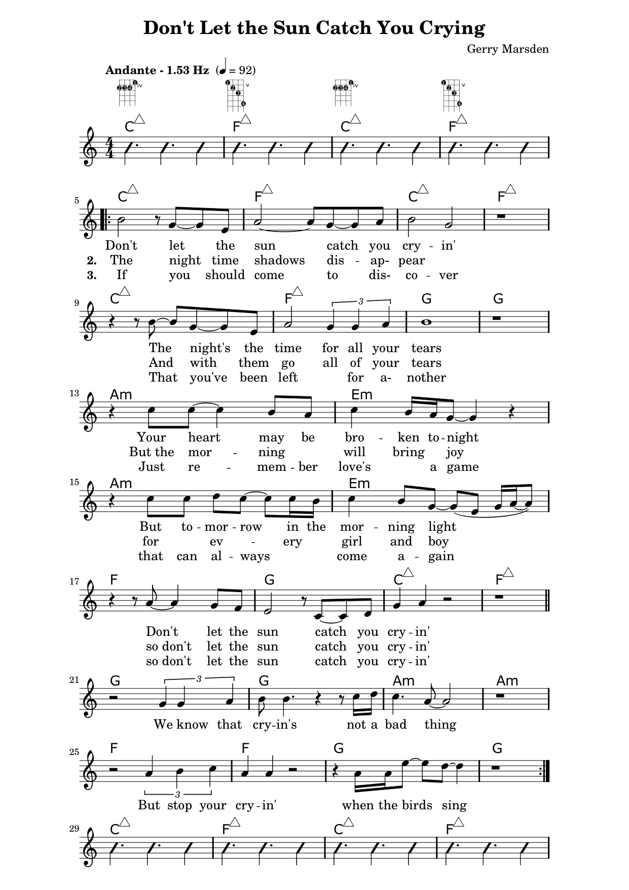

Fly Me To the Moon
written by: Bart Howard
danielle the singer
Today
written by: Randy Sparks
danielle the singer
On a Good Day (verses 2-3)
written by: Joanna Newsom
biscuit and otter
Fisherman's Blues
written by: Mike Scott, Steve Wickham
Ottery goodness (Danielle Hunt)

Musique
NevadaCityCA.gov